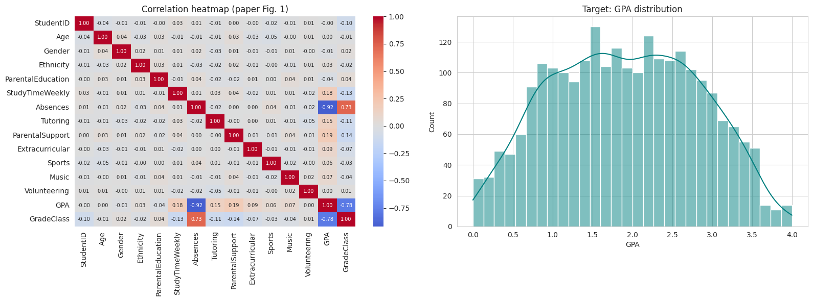
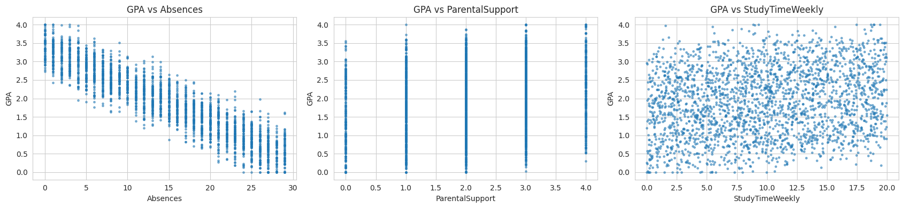
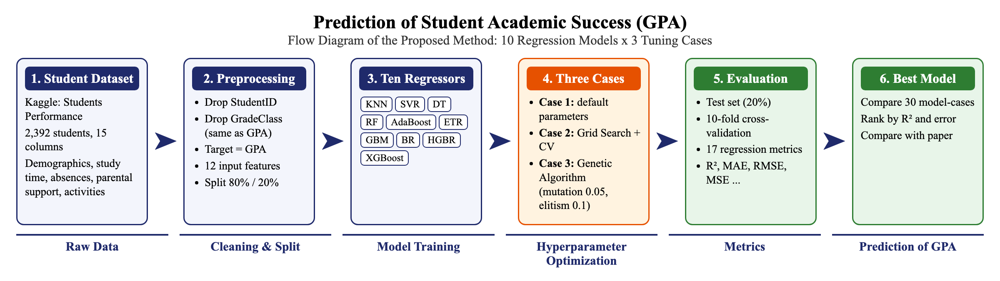
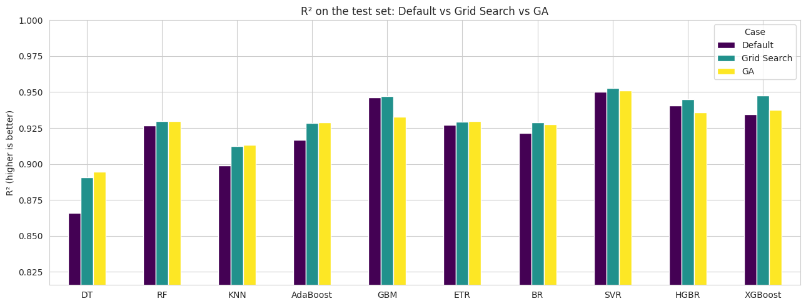
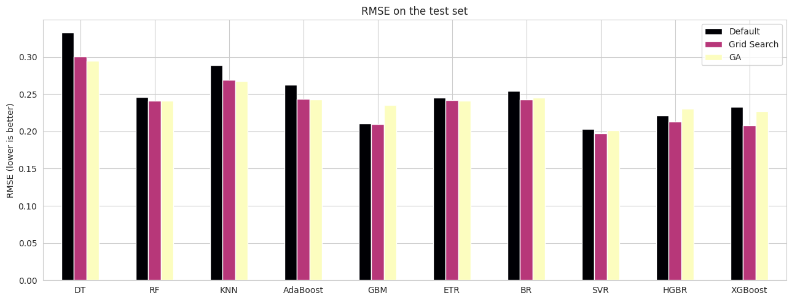
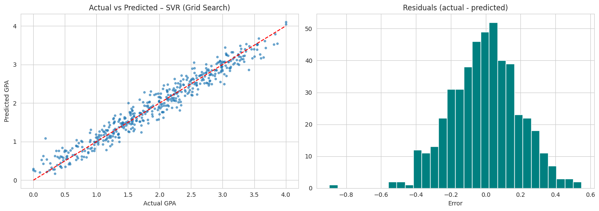
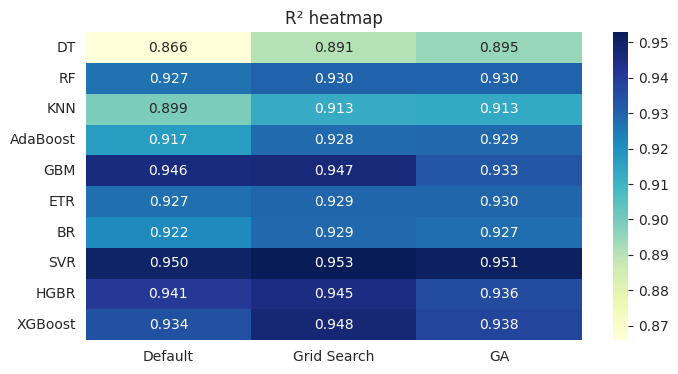
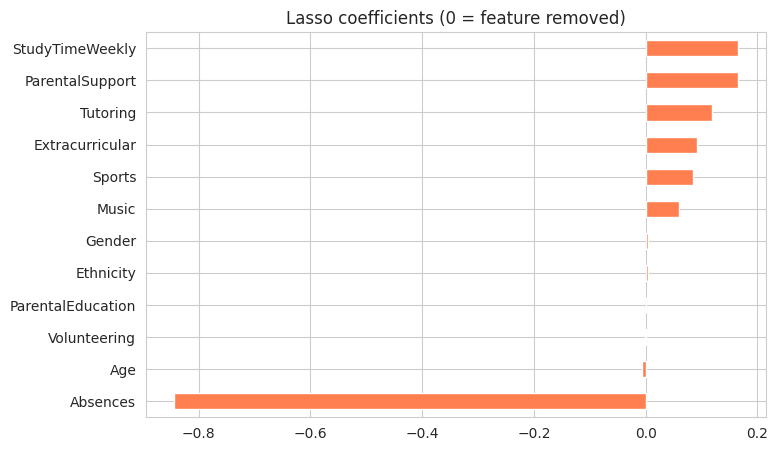

CASE 1 Default
The factory settings from the software library. No tuning at all. This is the baseline.
Analogy: wearing the outfit exactly as it came out of the packaging.
We rebuilt a research paper’s experiments from scratch: 10 prediction models, each tuned 3 ways, then compared our results with the original, number by number.
In plain wordsGiven things like study time and absences, guess the student’s GPA, a number from 0 to 4.
Regression means predicting a number (here, GPA) rather than choosing a category (like pass/fail).
The model studies thousands of past students, learns which inputs move the number up or down, then applies that pattern to a student it has never seen.
Target: GPA (0–4).
Data leakage is when the model is accidentally handed the answer. The dataset also has GradeClass (A–F), but that letter is calculated from GPA. Keeping it would be like letting a student copy the answer key.
So GradeClass was removed, along with StudentID (a label with no meaning). The paper made the same choice.
In plain wordsOne thing dominates: students who miss more classes get much lower GPAs.
Kaggle Students Performance dataset: no missing values and no duplicate rows.
A correlation near −1 means “as one goes up, the other goes down almost in a straight line.” Absences is by far the strongest signal.
Weekly study time, parental support and tutoring have weak positive effects. Age, gender, ethnicity, sports and music have almost none.


In plain wordsClean the data, hide a test set, train and tune on the rest, then grade every model on the hidden students.

In plain wordsModels have dials, called hyperparameters. We compare leaving the dials alone, trying every setting, and evolving good settings.
The factory settings from the software library. No tuning at all. This is the baseline.
Write down a short list of values for each dial and try every combination, scoring each with cross-validation (repeated practice exams on the training data only).
Start with random settings. The best ones “survive”, mix with each other (crossover), occasionally get a random tweak (mutation), and the next generation is usually better.
In plain wordsDifferent “thinking styles” for the same task. Click a card to see the best settings we and the paper found.
Hyperparameter text: teal = ours, blue-grey = paper. Full tables with match flags are in section 8d.
In plain wordsR² is the share of GPA variation a model explains (1.0 is perfect). RMSE and MAE are the typical size of the miss, in GPA points, so lower is better.
★ = best in that column (highest R² / CV, lowest error). The paper reports no cross-validation scores, so its CV column is “—”. Paper values: Tables 3, 6, 8. Ours: report Tables 1–3 and notebook.




In plain wordsWe repeated the paper’s experiment and checked whether we got the same answers. Mostly yes; where we differ, we say why. This is a reproduction study, not a critique of the authors.
In plain wordsWe matched the paper on data, split, models and metrics. The biggest deliberate difference is the smaller genetic-algorithm budget.
| Aspect | Base paper | My implementation |
|---|
In plain wordsFor 27 of 30 experiments, our score is within 0.016 of the paper’s. The 3 big gaps are all cases where the paper’s own result collapsed.
Each cell shows Δ. Colour and sign/label carry the meaning.
| Model | Case | Paper R² | Ours R² | Δ (Ours − Paper) | Agreement |
|---|
In plain wordsSVR wins everywhere in our run; the paper agrees for two cases but crowns XGBoost for the genetic algorithm.
| Case | Paper | Ours |
|---|
In plain wordsWhere two searches land on the same dial positions, it suggests both found the same sweet spot.
| Model | Paper | Ours | Match |
|---|
The paper’s tables list max_features = 1. In scikit-learn, an integer 1 means “each model may look at exactly one feature”, while the decimal 1.0 means “look at 100% of the features”.
Predicting GPA from a single input would give very poor R². Our run used 1.0 and did not collapse. To be verified by re-running with the integer.
The paper’s GA picked learning_rate = 0.01 with absolute_error loss, a very slow learner that probably under-trained with the default number of iterations. Our GA picked learning_rate = 0.231.
With a much smaller GA budget (20 × 5 vs 100 × 10), our GA scored below Grid Search for GBM, HGBR and XGBoost. “GA is better” is not guaranteed; it depends on the search budget.
Probably due to library-version differences in default settings.
In plain wordsWe agree on the winners (SVR, GBM, XGBoost). We disagree that Bagging fails, and we add that a plain straight-line model does just as well.
In plain wordsExtra analyses that explain why the models behave as they do.

Our observations from reading the paper; please double-check against the original. These made exact reproduction harder, so we followed the paper’s intent and documented our choices.
In plain wordsThe short version, if you read nothing else.
In plain wordsGreat scores on one tidy dataset don’t guarantee the same on real schools.